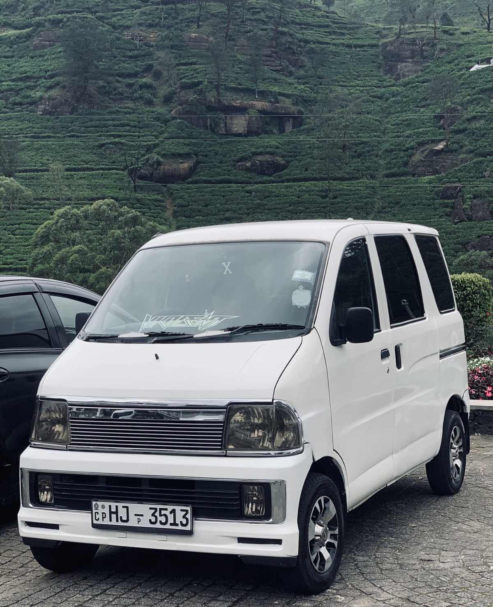

01 - The local way
Not a tour bus.
A day of your own.
Ceylon Pathways is a solo-operated private van service based in Nuwara Eliya. The person who answers your message is the person who drives you.
Days are shaped around you: an early start for the plains, a slower morning after, a stop for photos or a cup of tea. Fixed prices are agreed on WhatsApp before you travel, so the day stays about the day.
- Based in
- Nuwara Eliya
- Travel style
- Private van
- Pricing
- Fixed, upfront